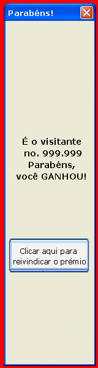
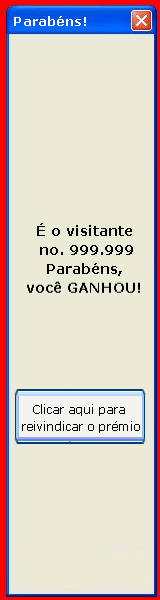
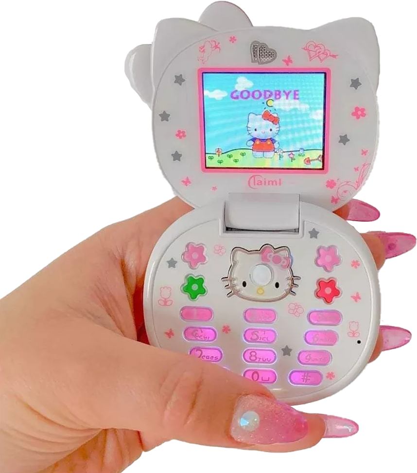
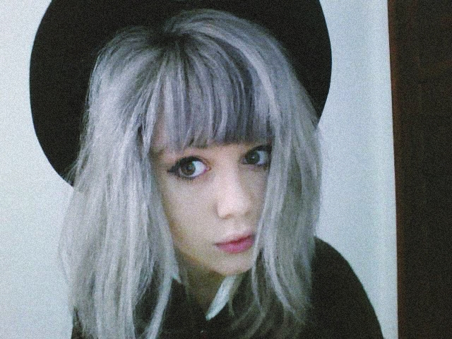
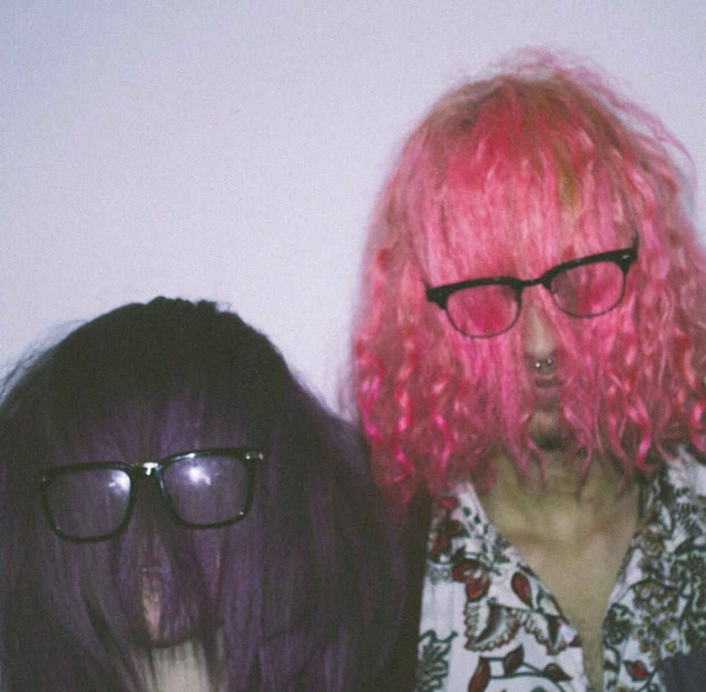
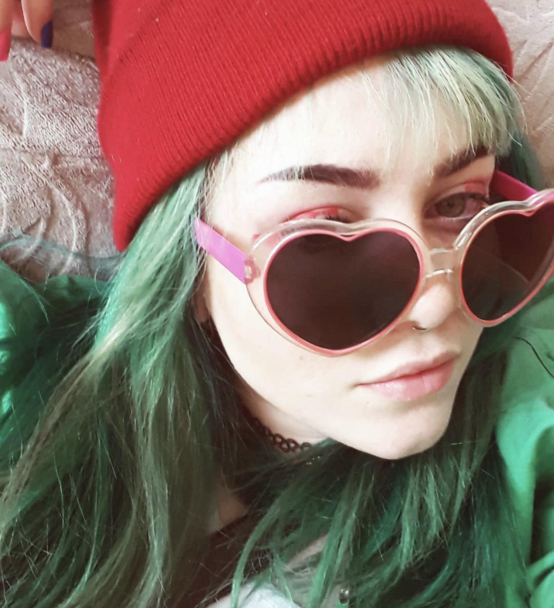
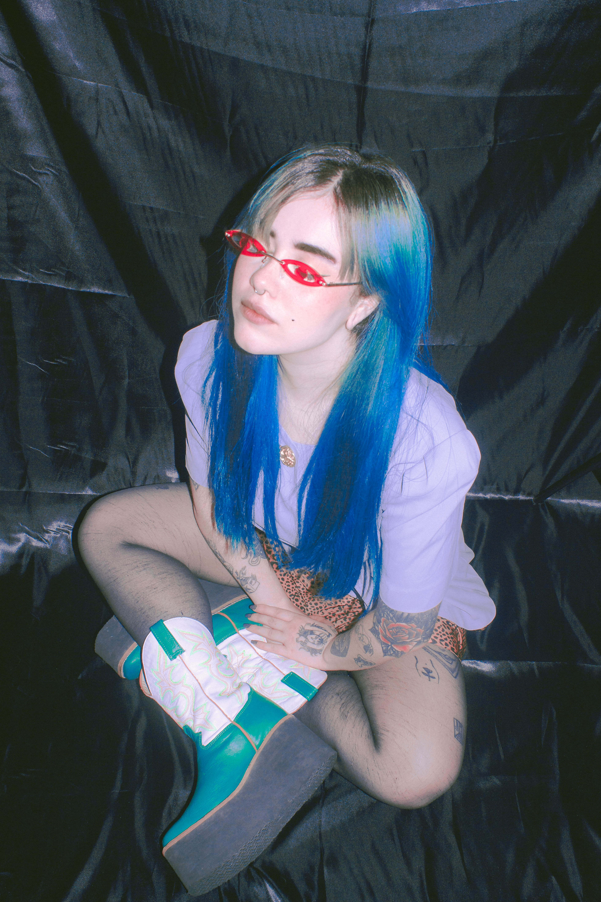
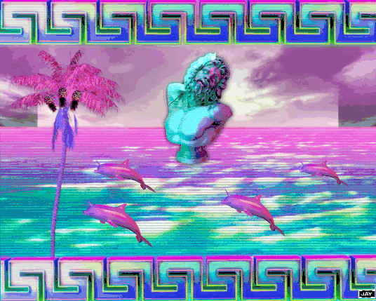

Minha motivação é encontrar pessoas, que assim como eu, são agudamente nostalgicas e procuram sempre questionar as origens dessas caracteristicas que nascem (ou nao(provavelmente não(quase certeza que não, mesmo))) conosco. Juntos, criamos uma comunidade para conversar, compartilhar e (sempre) questionar. Fnords são sempre bem vindos.
Nasci em 1998 e peguei o começo dos anos 2000 engatinhando... Porém, me lembro nitidamente da internet discada, as correntes por e-mail, baixar músicas no eMule para o meu sony ericsson da hello kitty...
Mas posso afirmar com toda a certeza que uma das coisas que mais sinto falta, são os gifs de bom dia cheios de gliter e cores. Ai, aquele choque de informações onde você nem ao menos conseguia ler direito o que estava escrito. Que estética linda, que época de ouro!
Um dos principais culpados foi a MTV. E se você já assistiu MTV alguma vez em torno de 2009, com certeza você conhece a MariMoon.
A MariMoon foi a maior inspiração fashion para mim. Me lembro bem de passar sombra para olhos no cabelo, para colorir. Batom, esmalte, papel crepom, QUALQUER COISA que deixasse o meu cabelo lindo igual ao dela. Mas eu não admirava somente o estilo da MariMoon, eu também admirava a sua personalidade. Principalmente a forma feliz em como ela se comunicava.
E quando eu FINALMENTE pude pintar o meu cabelo... Eu não parei mais.
   Hermes e Renato foi definitivamente a maior influência do humor surrealista pra mim. Seus vídeos eram marcados por absurdos e um humor não convencional. As construções de humor surreal tendem a envolver justaposições bizarras, situações irracionais ou absurdas e expressões nonsense. É quase impossível não sair com a barriga doendo de tanto rir vendo os vídeos desse grupo incrível!
Essa era uma das minhas favoritas. Cada vez o Jonas e a Baleia
apareciam falando sobre algum assunto diferente e totalmente
aleatório.
Algumas vinhetas da MTV conseguiam ser piores que o Lobisomen do
Mundo da Lua, e deixavam qualquer criança traumatizada.
Mas a mini Marte não se abalava, muito pelo contrário, adorava e
tirava uma pira cada vez que surgia uma vinheta nova.
Agora nós vamos entrar em um imenso textão, então pegue pipoca e um refri, sente-se de forma confortável, e por favor, não durma.
Blank Banshee é o nome artistico que o produtor Patrick Driscoll usa
em seu projeto de música eletrônica vaporwave. O Blank Banshee foi
descrito como “equilíbrio de ambiente abstrato e armadilha
dançante”.
Em seu projeto, ele traz fortes referências dos anos 90 e inicio
dos anos 2000. E através de Blank Banshee eu conheci o Vaporwave.
Vaporwave é um microgênero derivado da cena eletrônica, que
surgiu no início de 2010.
“Ok Marte, mas e daí? Muitos gêneros eletrônicos vêm sendo
lançados há anos”. Exceto que o vaporwave não é apenas uma visão
satírica moderna, é também um dos únicos gêneros que nasceram e
prosperaram online.
Então, o que é vaporwave? Em sua essência, é uma reinterpratação da
música genérica dos anos 80 e 90, como música de elevador, música
comercial ou jingles.
Ao adaptar e retrabalhar a música corporativa para torná-la
bonita, o vaporwave cutuca diretamente a generalidade e a insipidez do
consumismo excessivo. Esta música é muitas vezes misturada com imagens
da Internet decorrentes de glitch art e do movimento cyberpunk.
Como a maioria dos movimentos de nicho, os artistas do vaporwave
eram muitas vezes indivíduos anônimos e experientes na Internet
trabalhando sob um pseudônimo ou como parte de um coletivo artístico.
Vaporwave começou como uma variante da música chillwave, que teve uma
presença maior na mídia e foi pioneira por produtores e artistas como
James Ferraro e Ariel Pink.
Bom, então minha identificação com vaporwave surgiu de todo esse conceito sobre um microgênero com referências do movimento cyberpunk? Também, mas outro ponto é que gosto de edições psicodélicas com bustos e golfinhos

Sou um ser nostalgico, e é claro que todos somos um pouco, mas a
nostalgia é o que move meu ser. E é claro também que não é algo
natural, como nada de fato é, somos a imagem e semalhança do nosso
ciclo social, do que vimos na tv, na internet, na sociedade. Não é a
toa que esse trabalho faz um caminho sobre a minha personalidade e
como ela foi se formando ao longo dos anos e das influências.

É aqui que entramos nesse mar de questionamentos sem fim. Por que sou assim? É um problema sentir tanta nostalgia? Eu deveria falar sobre isso na terapia? Seria o aceleracionismo tecnológico amigo ou inimigo? Aceleramos tanto que deixamos quem somos para trás? Alienada, eu continuo sendo eu? (brincadeira(ou nao(talvez sim, talvez não. Voce jamais saberá(é brincadeira sim)))).